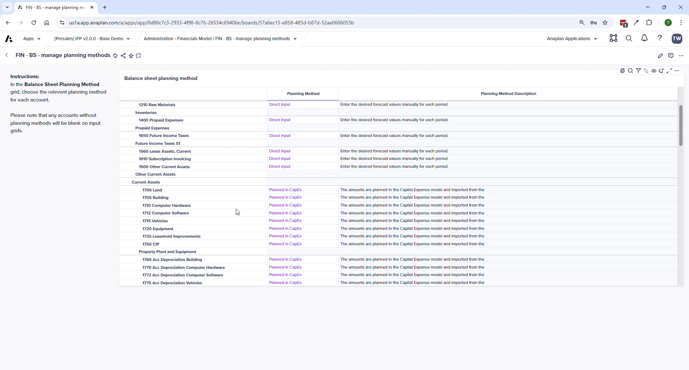

Balance Sheet & Cash Flow
Activity-based planning, cash offset accounts, balancing routine, and sub-schedules
All BS inputs represent periodic ACTIVITY — not end-of-period balances. If you enter nothing, the last actual balance rolls forward. Formula: Closing Balance = Last Actual Balance ± Activity. This means a zero-input BS still produces a sensible result.
Admin Setup
FIN – BS – Manage Planning Methods
| Method | Best For |
|---|---|
| Direct Input | General BS accounts |
| Days Sales Outstanding (DSO) | Accounts receivable |
| Days Payable Outstanding (DPO) | Accounts payable / trade payables |
| Days Inventory Outstanding (DIO) | Inventory |
| Inventory Turns | Inventory (alternative to DIO) |
| Percent of A/R | Bad debt provision |
| Planned in CapEx | PP&E and accumulated depreciation — auto from CE model |
FIN – BS – Manage Cash Offset Accounts
Cash Offset Accounts define how each BS account affects the cash balance. Every BS account must be categorized. Missing mappings break the cash flow statement. Cannot have more than one mapping per account — system flags duplicates.
- Select the Primary Cash Account at the top
- For each BS account, assign its offset category (increases in assets reduce cash; increases in liabilities increase cash)
- System shows red error if a duplicate mapping exists — prevents double-counting cash
End-User Planning Pages
BS – Account Planning

- Entity level only — no department or operational dimensions
- Dynamic inputs based on planning method (DSO → enter days; Direct → enter activity amounts)
- Adjustment available for every method
Sub-Schedules
| Page | Purpose |
|---|---|
| BS – Investments | New investments — enter amount, start date, duration, rate; see IS/BS/CF impact |
| BS – Intangibles & Financing | Intangibles, short-term debt, long-term debt instruments |
| BS – Leases | Capital and operating leases — enter details and see financial impact |
| BS – Joint Ventures | JV details and financial statement impact |
| BS – Equities | Opening share balance, planned share issuances |
For sub-schedules: the entity in the instrument must match the entity selector on the page. Misalignment means no financial data shows below the input. This is expected behavior — not a bug.
BS – Balancing Routine
- Runs month-by-month sequentially — July must complete before August (retained earnings roll-forward dependency)
- Runs for ALL entities, not just the one currently selected
- After running: balance sheet should be in balance based on the inputs entered
Run the Balancing Routine after each planning session where BS activity has been entered. The BS – Validations report in Reporting & Analysis will show whether you're in balance.